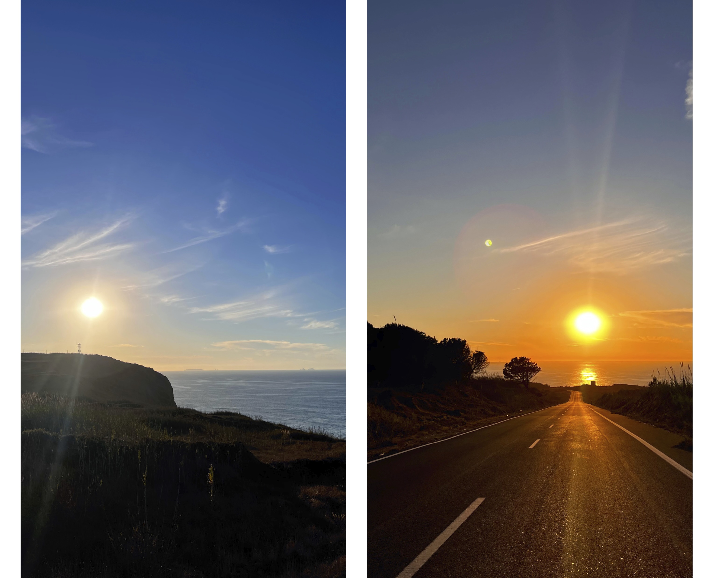
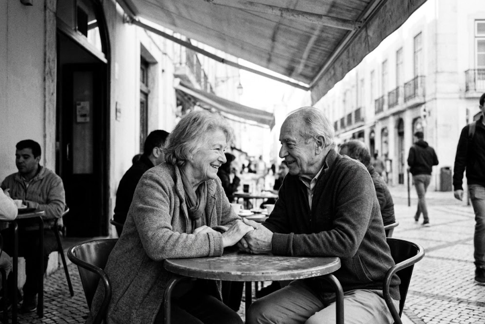
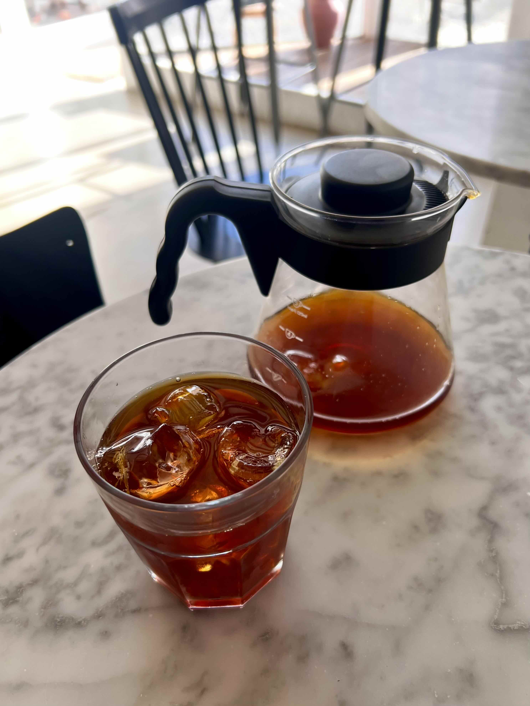

A vida que construiu é uma geometria perfeita: um casamento com hora certa para tudo, incluindo o silêncio; uma clínica de sucesso; dois filhos que crescem debaixo do mesmo teto sem que ela realmente os veja. Direitas, ângulos retos, nada fora do lugar.
Até que, numa manhã de março, essa geometria começa a rachar. Quanto de si própria ficou por viver, à espera de licença para existir?
Saber Mais & Comprar
No cimo da falésia há uma casa que nunca está acabada. Ninguém questiona o motivo. Reconhecem-na com a naturalidade com que se reconhece o sol, e a quem pergunta encolhem os ombros: é uma casa que não se acaba.
Ler EnsaioEnquanto escovava os dentes, parou a observar-se ao espelho. Ficou ali, imóvel, pouco menos de um minuto. Pousou a escova, ainda cheia de espuma, na borda do lavatório. O seu olhar desceu para a bancada de pedra.
Ler EnsaioNinguém soube ao certo como se soube. Na terça-feira à noite o mundo ainda não tinha data para acabar e na quarta-feira de manhã toda a gente sabia que acabava no sábado, às cinco e quarenta e dois da tarde...
Ler EnsaioEra uma rua como as outras. Era uma rua que não vem nos guias turísticos. A vizinhança mal se conhecia. Os poucos que metiam conversa eram tão poucos que se diria viverem na mesma casa. Na rua não brincavam crianças, e só de vez em quando passava alguém a passear o seu quatro patas, com voz de despacho...
Ler Ensaio
Antes de entrar no turno, a Teresa foi ao café do costume, naquela esquina ensolarada do bairro. Ali, gostava de desfrutar do seu café com um delicioso pastel de nata enquanto os raios do sol da manhã banhavam apenas a sua face. Cada pedaço de pastel de nata demorava-se na sua boca até se desfazer completamente.
Ler Ensaio
O café chegou aromático, como era costume. Há um ritual associado à sua toma. Primeiro cheiro profundamente, para sentir os aromas delicados daquela fermentação e torras de especialidade. Esta inspiração repete-se normalmente uma ou duas vezes, conforme os aromas identificados e a pressa de sentir aquele líquido de cor castanho-rubi a ativar as papilas gustativas.
Ler Ensaio
"A mesma dedicação que aplicamos à fermentação do pão
e à extração do café,
aplicamos agora à palavra."
A Aestus começou à volta do fogo, a alimentar o corpo. Mas acreditamos que uma experiência completa exige alimento para a mente. Este livro marca o início da nossa coleção de ficção literária — histórias escolhidas com curadoria, desenhadas para serem devoradas devagar, acompanhadas, de preferência, por um excelente café.